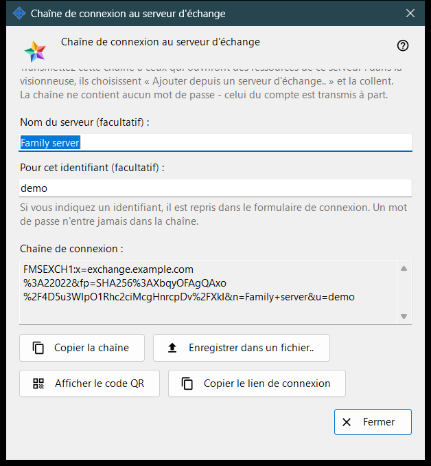
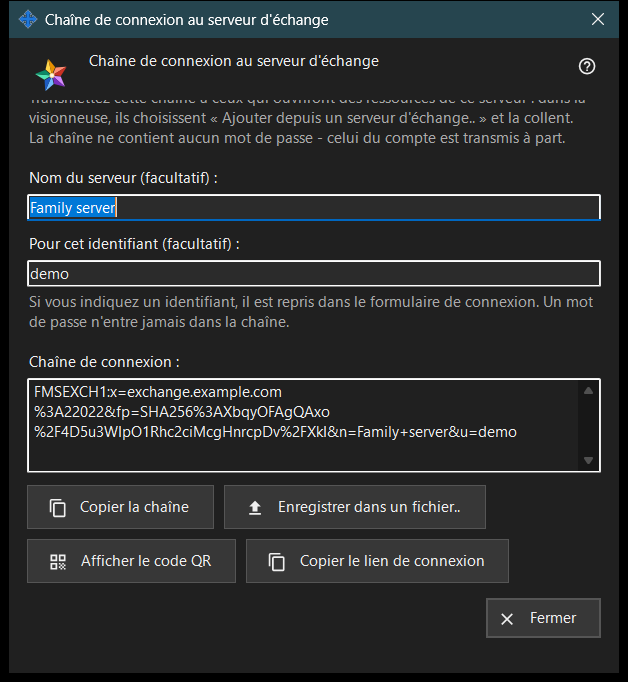

Chaîne de connexion au serveur d'échange
Objectif
Cette fenêtre crée la chaîne de connexion que les autres appareils utilisent pour trouver ce serveur d'échange et vérifier son certificat. Elle s'ouvre avec «Chaîne de connexion et code QR..» dans les paramètres du serveur d'échange ou dans l'accueil du serveur au premier lancement. La fenêtre ne modifie aucun paramètre.


Dans cet ordre
- Vérifiez que le serveur a un certificat et que l'adresse pour les clients est définie.
- Ouvrez la fenêtre : la chaîne apparaît tout de suite.
- Si vous le souhaitez, saisissez un nom de serveur et un identifiant ; la chaîne est recréée un instant après que vous avez cessé de taper.
- Copiez la chaîne, enregistrez-la dans un fichier, affichez son code QR ou copiez le lien de connexion.
- Transmettez le résultat à l'autre personne et communiquez le mot de passe du compte séparément.
- Cliquez sur «Fermer».
Les éléments
Quand le bouton est actif
Le bouton «Chaîne de connexion et code QR..» n'est actif que si le serveur a un certificat et que l'adresse pour les clients est définie. Quand l'adresse est vide, le bouton reste désactivé et l'indication en dessous dit «Définissez d'abord l'adresse pour les clients : sans elle, la chaîne de connexion ne peut pas être créée.» Dans la fenêtre, les boutons restent désactivés tant qu'il n'y a pas de chaîne.
Nom du serveur et identifiant
«Nom du serveur (facultatif) :» accepte jusqu'à 64 caractères et est enregistré dans la chaîne comme nom du serveur. «Pour cet identifiant (facultatif) :» accepte de 3 à 64 caractères (a-z, 0-9, point, tiret bas, trait d'union) et est renseigné dans le formulaire de connexion de l'appareil qui utilise la chaîne. Un mot de passe n'entre jamais dans la chaîne.
Chaîne de connexion
Le champ en lecture seule «Chaîne de connexion :» affiche le résultat : l'adresse pour les clients, l'empreinte du certificat ainsi que le nom et l'identifiant facultatifs. L'appareil qui reçoit la chaîne fait confiance à l'empreinte qu'elle contient, si bien que personne n'a à la comparer à la main.
Copier et enregistrer
«Copier la chaîne» la place dans le presse-papiers sous forme de texte ordinaire, car elle n'est pas secrète, et la ligne en dessous indique «La chaîne a été copiée.» «Enregistrer dans un fichier..» écrit un fichier texte .fmsexch (nom proposé exchange-server.fmsexch) et affiche son chemin ; l'autre appareil le lit avec «Ouvrir un fichier..» dans sa fenêtre du compte d'échange. Si le presse-papiers est occupé ou si le fichier ne peut pas être écrit, une ligne l'indique.
Code QR et lien de connexion
«Afficher le code QR» ouvre une image de la même chaîne à scanner ; elle désigne un serveur et ne donne accès à rien. «Copier le lien de connexion» n'apparaît que si ce serveur fournit un client web ; il copie un lien pour le navigateur qui contient la même chaîne.
Si la chaîne ne peut pas être créée
Une ligne de la couleur d'avertissement indique la cause : le nom ou l'identifiant est hors des limites ; le serveur n'a pas de certificat (démarrez le serveur une fois) ; ou le serveur d'échange n'a pas répondu. Corrigez la cause et la chaîne est recréée. «Fermer» termine la fenêtre ; le nom et l'identifiant ne sont pas enregistrés.
Paramètres du gestionnaire · Paramètres de partage SFTP · Paramètres du serveur d’échange